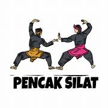

<!DOCTYPE html>
<html lang="en">
<head>
    <meta charset="UTF-8">
    <meta name="viewport" content="width=device-width, initial-scale=1.0">
    <link rel="stylesheet" href="styles.css">
    <title>Deskripsi ekstrakurikuler</title>
</head>
<body>
    <div id="galeri-jadwal" class="galeri-container"></div>

    <script src="script.js"></script>
</body>
</html>  
<style>
.galeri-container {
    display: flex;
    flex-wrap: wrap;
}

.galeri-item {
    width: 50px;
    margin: 10px;
}

.galeri-item img {
    width: 50%;
    height: auto;
}  
</style>  
</head> 
<body>
    <main style="background-color:#0f5ded;">  

        
        <p>Pramuka adalah singkatan dari Praja Muda Karana, yang berarti "Jiwa Muda yang Suka Berkarya". Pramuka adalah organisasi pendidikan nonformal yang menyelenggarakan pendidikan kepanduan di Indonesia
            Pengertian pramuka secara resmi tertuang dalam Undang-Undang Nomor 12 Tahun 2010 tentang Gerakan Pramuka, yaitu:
            Gerakan Pramuka adalah organisasi pendidikan nonformal yang menyelenggarakan pendidikan kepanduan bagi kaum muda guna menumbuhkan tunas bangsa yang berjiwa Pancasila, rajin, terampil, dan bertanggungjawab.</p> 

         
        <p>Pencak Silat adalah seni bela diri tradisional yang berasal dari Indonesia, tetapi juga tersebar luas di berbagai negara Asia Tenggara seperti Malaysia, Brunei, Singapura, dan Filipina. Seni bela diri ini tidak hanya fokus pada aspek fisik, tetapi juga mencakup nilai-nilai spiritual, etika, dan kebudayaan. Pencak Silat tidak hanya sebuah seni bela diri, tetapi juga warisan budaya yang memperkaya identitas Indonesia dan beberapa negara Asia Tenggara. Keindahan gerakan, nilai-nilai yang diajarkan, serta sejarah yang menyertainya membuat Pencak Silat menjadi lebih dari sekadar bentuk seni bela diri biasa.Pencak Silat tidak hanya sebuah seni bela diri, tetapi juga warisan budaya yang memperkaya identitas Indonesia dan beberapa negara Asia Tenggara. Keindahan gerakan, nilai-nilai yang diajarkan, serta sejarah yang menyertainya membuat Pencak Silat menjadi lebih dari sekadar bentuk seni bela diri biasa.</p> 

         
        <p>Futsal adalah sebuah bentuk sepak bola yang dimainkan dalam ruangan, biasanya di lapangan yang lebih kecil dan dengan jumlah pemain yang lebih sedikit dibandingkan sepak bola tradisional.Lapangan futsal memiliki dimensi yang lebih kecil dibandingkan lapangan sepak bola tradisional. Panjang lapangan berkisar antara 25-42 meter dan lebar antara 16-25 meter. 
            Permainan futsal dimainkan oleh dua tim, masing-masing terdiri dari lima pemain. Salah satu di antara mereka adalah penjaga gawang. Karena jumlah pemain yang lebih sedikit dan lapangan yang lebih kecil, futsal menekankan pada kecepatan permainan, teknik individu, dan koordinasi tim.</p> 

        
        <p> <b>Tari adalah bentuk seni yang universal, menggabungkan unsur-unsur fisik, emosional, dan artistik untuk menciptakan pengalaman yang mendalam dan berkesan. Dengan keanekaragaman tarian di seluruh dunia, seni ini memainkan peran penting dalam memperkaya warisan budaya global.
            Ada berbagai macam gaya tari di seluruh dunia, termasuk tari klasik, tari kontemporer, tari rakyat, tari etnik, dan banyak lagi. Kostum dalam tari sering dirancang untuk menyoroti gerakan dan tema pertunjukan. Kostum dapat mencakup busana tradisional, pakaian modern, atau pakaian yang dibuat khusus untuk pertunjukan.
            Tidak ada tahun yang secara khusus dapat diidentifikasi sebagai "tahun berdirinya tari" karena tari telah ada sepanjang sejarah manusia sebagai ekspresi budaya, ritual keagamaan, hiburan, dan bentuk ekspresi lainnya. Tari telah menjadi bagian integral dari berbagai tradisi dan peradaban.</b></p> 

            
            <p><b>Bola voli adalah olahraga tim yang dimainkan oleh dua tim, masing-masing terdiri dari enam pemain. Olahraga ini dimainkan di lapangan terbagi menjadi dua area, dengan jaring di tengahnya. Tujuan utama permainan adalah memukul bola ke sisi lawan dan mencegah bola tersebut jatuh ke sisi sendiri.</b></p>
    </main>  
     <!-- Kode JS -->
    <script>
        document.addEventListener("DOMContentLoaded", function () {
    // Data jadwal ekstrakurikuler (contoh, sesuaikan dengan data aktual)
    const jadwalEkstrakurikuler = [  
        // Tambahkan jadwal ekstrakurikuler lainnya sesuai kebutuhan
    ];

    // Ambil elemen galeri container dari HTML
    const galeriContainer = document.getElementById("galeri-jadwal");

    // Tambahkan setiap item jadwal ekstrakurikuler ke galeri container
    jadwalEkstrakurikuler.forEach((ekstrakurikuler) => {
        const galeriItem = document.createElement("div");
        galeriItem.classList.add("galeri-item");

        const img = document.createElement("img");
        img.src = ekstrakurikuler.gambar;
        img.alt = ekstrakurikuler.nama;

        galeriItem.appendChild(img);
        galeriContainer.appendChild(galeriItem);
    });
});
    </script>
</body> 